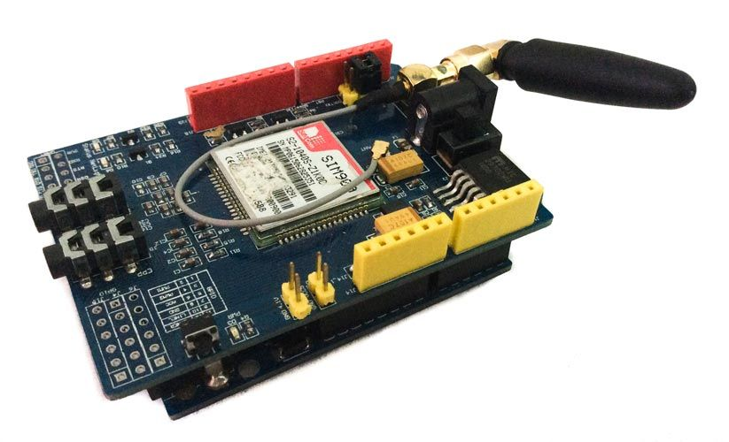

21.06.2019Рубрика: Полезные программы
GSM и GPRS модуль в проектах Ардуино позволяет подключаться к удаленным автономным устройствам через обычную сотовую связь. Мы можем отправлять команды на устройства и принимать информацию от него с помощью SMS-команд или через интернет-подключение, открытое по GPRS. В этой статье мы рассмотрим наиболее популярные модули для Arduino, разберемся с подключением и рассмотрим примеры программирования.
GSM модуль используется для расширения возможностей обычных плат Ардуино – отправка смс, совершение звонков, обмен данными по GPRS. Существуют различные виды модулей, наиболее часто используемые – SIM900, SIM800L, A6, A7.
Описание модуля SIM900
Модуль SIM900 используется в различных автоматизированных системах. С помощью интерфейса UART осуществляется обмен данными с другими устройствами. Модуль обеспечивает возможность совершения звонков, обмен текстовыми сообщениями. Работа модуля релизуется на компоненте SIM900, созданным фирмой SIMCom Wireless Solution.
С помощью устройства можно отслеживать маршрут транспорта совместно с ГЛОНАСС или GPS устройством. Возможность отправки смс-сообщений используется в беспроводной сигнализации и различных охранных системах.
Описание модуля SIM800L
Модуль выполнен на основе компонента SIM800L и используется для отправки смс, реализации звонков и обмена данными по GPRS. В модуль устанавливается микро сим карта. Устройство обладает встроенной антенной и разъемом, к которому можно подключать внешнюю антенну. Питание к модулю поступает от внешнего источника либо через DC-DC преобразователь. Управление осуществляется с помощью компьютера через UART, Ардуино, Raspberry Pi или аналогичные устройства.
Модуль A6 разработан фирмой AI-THINKER в 2016 году. Устройство используется для обмена смс-сообщениями и обмена данными по GPRS. Плата отличается низким потреблением энергии и малыми размерами. Устройство полностью совместимо с российскими мобильными операторами.
Модуль поддерживает карты формата микросим.
Описание модуля A7
A7 является новейшим модулем от фирмы AI-THINKER. По сравнению со своим предшественником A6 имеет встроенный GPS, позволяющий упрощать конструкцию устройства.
Устройство поддерживает микросим карты. Модуль поддерживает обмен звонками, обмен смс-сообщениями, передачу данных по GPRS, прием сигналов по GPS.
Где купить GSM модули для ардуино
Традиционно, прежде чем начать, несколько советов и полезных ссылок на продавцов Aliexpress.
|
Модуль SIM800C для ардуино от проверенного поставщика | |
|
Шилд для разработки, совместимый с Ардуино, на базе модуля SIM900 GPRS/GSM |
Недорогой модуль mini A6 GPRS GSM |
Подключение GSM GPRS шилда к Arduino
В этом разделе мы рассмотрим вопросы подключения GSM – модулей к плате адуино. За основу почти во всех примерах берется Arduino Uno, но в большинстве своем примеры пойдут и для плат Mega, Nano и т.д.
Для подключения нужны плата Ардуино, модуль SIM800L, понижающий преобразователь напряжения, провода для соединения и батарея на 12В. Модуль SIM800L требует нестандартное для ардуино напряжение в 3,7В, для этого нужен понижающий преобразователь напряжения.
Распиновка модуля SIM800 приведена на рисунке.
Плату Ардуино нужно подключить к компьютеру через USB кабель. Батарею на 12 В подключить через преобразователь: -12В на землю Ардуино, от земли в преобразователь в минус, +12В в преобразователь в плюс. Выходы с модуля TX и RX нужно подключить к пинам 2 и 3 на Ардуино. Несколько модулей можно подключать к любым цифровым пинам.
Модуль A6 стоит дешевле, чем SIM900, и его очень просто подключать к Ардуино. Модуль питается напряжением 5В, поэтому для соединения не нужны дополнительно понижающие напряжение элементы.
Для подключения потребуются плата Ардуино (в данном случае рассмотрена Arduino UNO), GSM модуль А6, соединительные провода. Схема подключения приведена на рисунке.

Вывод RX с модуля GSM нужно подключить к TX на плате Ардуино, вывод TX подключить к пину RX на Ардуино. Земля с модуля соединяется с землей на микроконтроллере. Вывод Vcc на GSM модуле нужно соединить с PWR_KEY.
Подключение с помощью GSM-GPRS шилда
Перед подключением важно обратить внимание на напряжение питания шилда. Ток в момент звонка или отправки данных может достигать значений в 15-2 А, поэтому не стоит запитывать шилд напрямую от Ардуино.
Перед подключением к Ардуино нужно установить сим-карту на GSM-GPRS шилд. Также нужно установить джамперы TX и RX, как показано на рисунке.
Подключение производится следующим образом – первый контакт (на рисунке желтый провод) с шилда нужно соединить с TX на Ардуино. Второй контакт (зеленый провод) подключается к RX на Ардуино. Земля с шилда соединяется с землей с аруино. Питание на микроконтроллер поступает через USB кабель.
Макет соединения шилда и платы Ардуино изображен на рисунке.
Для работы потребуется установить библиотеку GPRS_Shield_Arduino.
Для проверки правильности собранной схемы нужно сделать следующее: соединить на Ардуино RESET и GND (это приведет к тому, что данные будут передаваться напрямую от шилда к компьютеру), вставить сим-карту в шилд и включить питание шилда. Плату Ардуино нужно подключить к компьютеру и нажать кнопку включения. Если все соединено правильно, загорится красный светодиод и будет мигать зеленый.
Краткое описание взаимодействия через AT-команды
AT-команды – это набор специальных команд для модема, состоящий из коротких текстовых строк. Чтобы модем распознал поданную ему команду, строки должны начинаться с букв at. Строка будет восприниматься, когда модем находится в командном режиме. AT-команды можно отправлять как при помощи коммуникационного программного обеспечения, так и вручную с клавиатуры. Практические все команды можно разделить на 3 режима – тестовый, в котором модуль отвечает, поддерживает ли команду; чтение – выдача текущих параметров команды; запись – произойдет записывание новых значений.
Список наиболее используемых AT-команд:
В данном случае рассмотрены основные команды для модуля SIM900. Для разных модулей команды могут незначительно отличаться. Данные для модуля будут подаваться через специальную программу «терминал», которую нужно установить на компьютер. Также подавать команды модулю можно через монитор порта в Arduino IDE.
Скетчи для работы с модулем GSM
Отправка СМС на примере SIM900
Перед тем, как отправить сообщение, нужно настроить модуль. В первую очередь нужно перевести в текстовый формат передаваемое сообщение. Для этого существует команда AT+CMGF=1. Нужно перевести кодировку на GSM командой AT+CSCS=»GSM». Эта кодировка наиболее удобная, так как там символы представлены в ASCII коде, который легко понимает компилятор.
Затем нужно набрать смс-сообщение. Для этого посылается команда с номером абонента AT+CMGS=»+79XXXXXXXXX» r, в ответ предлагается набрать текст смс. Нужно выполнить отправку сообщения. По окончании требуется отправить код комбинации Ctrl+Z, модуль позволит отправку текста адресату. Когда сообщение будет отправлено, вернется OK.
Взаимодействие с модулем основано на индексах, которые присваиваются каждому новому сообщению. По этому индексу можно указать, какое из сообщений удалить или прочитать.
Получение смс. Для чтения смс-сообщения используется команда AT + CNMI = 2,2,0,0,0. Когда на модуль придет текстовое сообщение, он отправит в последовательный порт +CMTI: «SM»,2 (в данном случае 2 – порядковый номер сообщения). Чтобы его прочитать, нужно отправить команду AT+CMGR=2.
Прием голосового звонка. В первую очередь для разговора нужно подключить к модулю динамик и микрофон. При получении звонка будет показан номер, с которого он совершен. Для осуществления работы нужно включить библиотеку GSM:
Если сим-карта заблокирована, нужно ввести ее пин-код. Если пин-код не требуется, это поле нужно оставить пустым.
#define PINNUMBER “”
В setup() должна быть произведена инициализация передачи данных на компьютер. Следующим шагом будет создание локальной переменной, чтобы отследить статус подключения к сети. Скетч не будет запущен, пока сим-карта не подключена к сети.
С помощью функции gsmAccess.begin() происходит подключение к сети. При установлении соединения вернется значение GSM_READY.
vcs.hangCall(); – функция, показывающая, что модем готов принимать звонки.
getvoiceCallStatus() – определяет статус скетча. Если кто-то звонит, она возвращает значение RECEIVINGCALL. Для записи номера нужно воспользоваться функцией retrieveCallingNumber(). Когда будет совершен ответ на звонок, вернется TALKING. Затем скетч будет ждать символа новой строки, чтобы прервать разговор.
Установить GPRS-соединение и отправить данные на удаленный сервер
Сначала нужно установить библиотеку SoftwareSerial, которая позволяет обеспечивать последовательную передачу информации и связать GSM-модуль и микроконтроллер Ардуино.
Для отправки данных на сервер нужно отправить следующие команды:
AT+SAPBR=1,1 – открытие Carrier.
Следующие три команды связаны с установкой настроек подключения к сети.
AT+SAPBR=3,1,\”APN\”,\”internet.mts.ru\” – выбор оператора mts, имя точки доступа.
AT+SAPBR=3,1,\”USER\”,\” mts \” – выбор пользователя mts.
AT+SAPBR=3,1,\”PWD\”,\” mts \”
AT+SAPBR=1,1 – установка соединения.
AT+HTTPINIT – инициализация http.
AT+HTTPPARA=”URL”, – URL адрес.
AT+HTTPREAD – ожидание ответа.
AT+HTTPTERM – остановка http.
Если все выполнено правильно, в мониторе порта будут появляться строчки с АТ командами. Если отсутствует связь с модемом, то будет показывать по одной строке. При успешной установке GPRS-соединения на модуле начнет мигать светодиод.
Arduino представляет собой аппаратную платформу, используемую для быстрого создания различных электронных устройств, включая и охранные . Благодаря несложной конструкции, простоте языка программирования, а также использования открытых кодов даже непрофессионал сможет самостоятельно сделать многофункциональную сигнализацию для охраны своего дома, дачи, квартиры или гаража. Arduino GSM модуль станет оптимальным вариантном для создания бюджетной охранной системы, которую оптимально можно настроить под конкретный объект.
Аппаратная платформа Arduino широко применяется в процессе создания различных электронных систем и устройств, которые могут принимать и обрабатывать сигналы от разно функциональных аналоговых либо цифровых сенсоров и датчиков. За результатами обработки получаемых сигналов может осуществляться управление внешними исполнительными механизмами и системами, подключаемыми к Arduino.
Пример использования данных модулей на видео:
Назначение
Аппаратная платформа Arduino обеспечивает возможным эффективно взаимодействовать с контролируемой средой через широкий спектр функциональных датчиков, которые могут контролировать различные параметры. Благодаря этому на базе такого рода платформ можно формировать охранные комплексы, которые будут следить за перемещениями по охраняемому периметру, за вскрытием окон и дверей, за повреждением стекол. Кроме датчиков охранного типа можно применять также и температурные сенсоры, датчики контроля за утечкой воды или газа.
Используя с платформой Ардуино GSM модуль информацию об опасности или внештатной ситуации на объекте можно предать владельцу максимально быстро. Для этой цели используется одна из сетей мобильных операторов.
Отличительной особенностью устройств Arduino является то, что их микроконтроллер может программироваться самим пользователем, используя язык Arduino, основанный на Wiring. Благодаря этому каждый может программировать алгоритм работы создаваемой охранной сигнализации так, как это требуется для конкретного охраняемого объекта и особенностей его применения.
На сегодняшний день существует множество аппаратных платформ и микроконтроллеров, которые могут получать информацию от внешних датчиков, обрабатывать ее и отправлять сигналы управления к исполнительным системам. Платформа Arduino максимально упрощает выполнение перечисленных процессов и владеет широким спектром преимуществ перед иными устройствами подобного рода.
Высокая надежность аппаратной платформы. Платы Arduino выпускаются с микроконтроллерами ATMEGA8 и ATMEGA168 (более ранние модели) и с контроллерами ATmega32u4, Atmel ATmega328 (новые модели), которые отличаются высокой функциональностью и надежностью.
Принцип работы
Чтобы обеспечить полнофункциональную работу охранных систем или других устройств, построенных с применением платформ Arduino нужно иметь GSM модуль для Ардуино. С его помощью может осуществляться выход в Интернет, совершаться голосовой дозвон или отправка СМС-собщений.
В GSM-плате применяется специальный радиомодем M10, взаимодействие с которым обеспечивается за счет специальных AT-команд. Обмен информацией с модемом реализован с помощью программного последовательного интерфейса, владеющего цифровыми кодами.
Используемый в Ардуино GSM модем является 4-диапазонным, который может функционировать на следующих частотах: GSM 850MHz и 900MHz, PCS1900MHz и DCS1800MHz. В модеме реализована поддержка таких протоколов, как TCP/UDP и HTTP, обеспечивающих соединения через GPRS. Скорость передачи информационных пакетов в таком режиме будет составлять около 90 кбит/сек.
Отправка СМС через Arduino и GSM модуль реализуется при наличии установленной SIM-карты одного из сотовых операторов.»
Кроме этого появится возможность осуществлять передачу голосовых сообщений, совершать звонки – для этого дополнительно нужен микрофон и внешний динамик. Установка SIM-карты позволит использовать Arduino в режиме сотовой связи или GPRS.
Как подключать модули к ардуино
Перед тем, как подключить GSM модуль к Ардуино в его слот для следует установить подходящего типоразмера «симку» одного из операторов сотовой связи. После этого модуль подсоединяется к аппаратной платформе Arduino в соответствии с инструкцией и производится ее прошивка. Для этой цели используется ПК, который подключается к устройству с помощью USB-кабеля. После загрузки среды Arduino следует нажать клавишу Upload, что запустит процесс загрузки софта. По завершению этого процесса платформа может отсоединяться от компьютера и питаться от внешней системы питания.
Сравнительные характеристики GSM модулей
На потребительском рынке представлен широкий выбор различных GSM модулей под Arduino. Ниже приведены основные характеристики наиболее популярных.
Neoway M590
Ардуино GSM модуль M590 является беспроводным коммуникационным устройством, используемым в целях приема и передачи информации в сетях мобильной связи. Модуль этой серии создан на плате с минимальной обвязкой и позиционируется как GSM-модуль для аппаратной платформы Arduino.
С помощью этого устройства можно устанавливать мобильную связь с внешним телефоном, отправлять СМС-сообщения, производить обмен информацией по стандарту GPRS Class-10. В модуле этой конструкции нет микрофонного входа, что ограничивает возможность осуществления приема голосовой связи – соединение может устанавливаться, но звук передаваться не будет.
Для управления M590 используются АТ-команды, которые подаются посредством последовательной связи. В качестве рабочих радиочастот применяются частоты от 900 МГц до 1800 МГц. Величина питающего напряжения составляет в пределах 3,3…5 В. Поэтому GSM модуль Neoway M590 подключение к Ардуино осуществляет через специальный преобразователь напряжений 5 В « 3,3 В.
Компактный Sim800l GPRS GSM модуль относится к устройствам, которые применяются для поддержки мобильной связи. Модуль построен на безе SIM-800L, созданного SIMCom Wireless Solutions и рассчитан для предоставления услуг к сервисам информационных сетей GPRS\GSM, используя для этого частоты от 850 МГц до 1900 МГц. С его помощью может осуществляться отправка SMS-сообщений, реализация звонков, а также обмен информацией по GPRS-каналам.
GSM-модуль комплектуется антенной, при потребности улучшения уровня сигнала можно использовать дополнительные антенны. Для управления модулем может использоваться ПК, подключаемый посредством специальной платы преобразования интерфейсов USB-UART либо же непосредственно через сам UART. Если используется Sim800l GPRS GSM модуль, подключение к Ардуино должно реализовываться через преобразователь логических уровней. Это обусловлено тем, что у SIM800L величина напряжения на логическом высоком уровне составляет 2,8 В, а в Arduino – 3,3…5 В.
Подключение GSM модуля к Arduino обеспечит возможность использования технологий обмена данными GSM/GPRS, а также совершать звонки и посылать СМС-сообщения. Устройства этого типа построены с использованием модуля SIMCom SIM900. Они имеют слот для установки SIM-карты, разъем для подключения внешней антенны, набор 3,5-миллиметровых джеков для аудио входа и выхода. Управление и работа с Arduino GSM Shield осуществляется посредством Serial-соединений и набора специализированных AT-команд.
Этот модуль представляет собой специальную плату, используемую для управления цифровыми устройствами удаленно, а также для обмена информацией. Применение SIM900 позволяет Arduino работать по технологиям GSM/GPRS, обеспечивая голосовую связь, отправку СМС и обмен данными с помощью сотовых и мобильных сетей.
Для функционирования этого модуля к нему подключается управляющий контроллер, источник питания, антенна, а также устанавливается SIM-карта мобильного оператора. При помощи специальных джамперов выполняется настройка способа обмена данными с контроллером. При потребности можно подключить динамик и микрофон.
Shield GPRS/GSM SIM900 с антенной
SIM900 GPRS/GSM Shield Development Board Quad-Band Kit For Arduino Compatible
Модуль для работы микроконтроллерных устройств Arduino и аналогичных в сетях сотовой связи по стандартам GSM и GPRS. Ориентирован на использование в системах автоматики и управления. Обмен данными с другими модулями происходит через интерфейс UART. Shield GPRS/GSM SIM900 с антенной может сопрягаться непосредственно с микроконтроллером через интерфейс UART или работать совместно с персональным компьютером при использовании преобразователя интерфейса портПК-UART. Это возможно благодаря программной совместимости на уровне класса команд используемых для управления модемами - АТ команды.
Мониторинг объектов и управление ими происходит благодаря обмену данными в пределах досягаемости мобильной связи. Обеспечивается голосовая связь, отправка СМС, ММС и много других функций и сервисов. Работа модуля основана на компоненте SIM900.
Статья на русском из журнала о компоненте SIM900 . Компонент разработан компанией SIMCom Wireless Solutions. Сайт SIMCom имеет русскоязычную версию . Плата GSM модуля на стороне компонентов содержит соединители для подключения антенны, наушников и микрофона. На стороне пайки платы размещены держатель батареи CR1220 3 вольта поддерживающей работу часов модуля и контейнер для установки симкарты.
Одно из применений устройства - система слежения за перемещениями транспорта совместно с ГЛОНАСС или GPS прибором. Отправка СМС сообщений позволяет использовать модуль в диспетчеризации, беспроводной сигнализации и в охранных системах. В результате происходящих событий могут отправляться различные СМС: “Аварийный стоп лифта 2 дома №34”, “Дверь автомобиля открыта”, “Подвал открыт”, “Напряжение 220 В выключено”, “Входная дверь дачи открыта”, “Включено освещение”, “Температура в теплице ниже критической”. Модуль незаменим для контроля и управления подвижными объектами, перемещающимися на большие расстояния. Или в случае удаления оператора на большое расстояние от стационарного объекта.
Shield GPRS/GSM SIM900 с антенной дает широкие возможности изучения работы компонента SIM900. Монтаж компонента SIM900 выполняется по самым современным технологиям из-за чего припаять к печатной плате SIM900 в лабораторных условиях весьма затруднительно. Имея модуль с установленным SIM900 можно проводить эксперименты по применению компонента SIM900. При использовании в собственных разработках компонента SIM900 появляется возможность отладки программного обеспечения и проверки схемотехнических решений.
Питание
напряжение, В
номинальное 5
диапазон 4,8-5,2
ток
обычный режим 50-450 мА
в спящем режиме 1,5 мА
предельный импульсный 2 А
Поддерживает симкарты питанием 1,8 и 3 В
Диапазоны связи 850, 900, 1800, 1900 МГц
Поддерживает сеть 2G
Мощность передачи в различных диапазонах
1 Вт 1800 и 1900 МГц
2 Вт 850 и 900 МГц
Соответствует стандарту GSM фазы 2/2+
Встроенные протоколы TCP и UDP
Класс передачи данных GPRS multi-slot class 10/8
Аудиокодеки HR, FR, EFR, AMR, подавление эха
CSD до 14,4кбит/сек
PPP стек
MUX (07.10)
Протоколы HTTP и FTP
Есть возможность отправлять сигналы DTMF и проигрывать записи как на автоответчике
Поддержка часов реального времени RTC
Температура, ℃
воздуха при работе -30...75
хранения -45...90
размеры 86 х 58 х 19 мм
Переключателем Power select устанавливается источник питания: внешний, подключенный к коаксиальному соединителю или источник питания микроконтроллерного модуля Arduino.
Кнопкой Power key включается или выключается питание при нажатии и удерживании в течение 2 с.
Индикация
О состоянии модуля сообщают 3 светодиода:
PWR (зеленый) - индикатор питания модуля,
Status (красный) - индикатор питания компонента SIM900,
Net Light (зеленый) - соединение с сетью.
Сообщения светодиода Net Light.
Выключен - SIM900 не работает.
Мигает с интервалами, указано в секундах:
0,064 включен и 0,8 выключен - сеть не обнаружена,
0,064 включен и 0,3 выключен - сеть обнаружена,
0,064 включен, 0,03 выключен - GPRS подключен.
Компонент SIM900 содержит порт UART, его сигналы выведены на выводы компонента и соединены с перемычками, устанавливающими с какими контактами модуля Shield GPRS/GSM SIM900 будет соединен порт UART компонента SIM900 с D0, D1 или D7, D8.
UART Shield GPRS/GSM можно подключнить: к аппаратному интерфейсу МК через контакты TXD и RXD модуля Shield GPRS/GSM, для этого используются D0, D1. Или к программно эмулируемому средствами ардуино, для этого используются контакты D7 и D8 модуля Shield GPRS/GSM. Полный интерфейс UART имеет 10 сигналов выведенных на контакты в углу платы: R1, DCD, DSR, CTS, RTS, GND, 2V8, TX, RX, DTR.
12 подписанных контактов цифровых линий ввода-вывода GPIO расположены в углу платы. Имеется 2 контакта выходных сигналов с широтно-импульсной модуляцией PWM1, PWM2. Вход АЦП контакт ADC. Интерфейс встроенного счетчика времени имеет 4 контакта. Обозначение контактов: DISP_CLK, DISP_DATA, DISP_D/C, DISP_CS.
Контакт D9 используется для программного контроля включения или выключения SIM900.
На плате установлен соединитель для подключения антенны.

Назначение выводов компонента SIM900.
Внешнее включение и выключение питания
Включить или выключить питание модуля можно с помощью сигнала на управляющем входе D9. Для изменения состояния на D9 подается импульс продолжительностью 1 с. Изменение состояния происходит спустя 3,2 с после начала импульса.
Включение модуля. Графики напряжения питания модуля, внешнего управляющего импульса и индикатора питания STATUS.
При управлении модулем руководящим устройством включение должно происходить без применения кнопки Power key, т. е. сразу после подачи питания. Для этого в программу МК следует добавить несколько команд.
Void powerUpOrDown()
{
pinMode(9, OUTPUT);
digitalWrite(9,LOW);
delay(1000);
digitalWrite(9,HIGH);
delay(2000);
digitalWrite(9,LOW);
delay(3000);
}
Эту группу команд в программе можно использовать и для выключения модуля. Также выключить GSM модуль можно посылая AT команду.
Подключение GSM SIM900A к Arduino
Модем SIM900A построен с двухмодульным GSM900 / GSM модемом SIM900A от SIMCOM. Он работает на частотах 900/1800 МГц. SIM900A может автоматически выполнять поиск этих двух диапазонов. Полосы частот также могут быть установлены с помощью AT-команд. Скорость передачи в бодах конфигурируется в диапазоне 1200-115200 по AT-команде. Модем GSM / GPRS имеет внутренний стек TCP / IP, чтобы вы могли подключиться к Интернету через GPRS. SIM900A - это ультракомпактный и надежный беспроводной модуль. Это полноценный GSM / GPRS-модуль в SMT-типа, спроектированный с очень мощным одночиповым процессором, интегрирующим ядро AMR926EJ-S, что позволяет вам использовать небольшие размеры и экономичные решения.
Двухдиапазонные частоты 900/1800 МГц
GPRS многослотовый класс 10/8 GPRS для мобильных станций класса B
Соответствует GSM фазе 2/2 +
Размеры: 24 * 24 * 3 мм
Управление через AT-команды (GSM 07.07, 07.05 и SIMCOM с расширенными AT-командами)
Диапазон напряжения питания: 5 В
Низкое энергопотребление: 1,5 мА (спящий режим)
Рабочая температура: от -40 ° C до +85 °
Шаг 1: Элементы
В этой статье вам понадобятся:
1. GSM SIM900A (MINI V3.9.2)
2. Плата Arduino Uno
3. Перемычки
4. Адаптер питания 5В
5. SIM-карта
6. Макетная плата
1. Вставьте SIM-карту в модуль GSM и заблокируйте ее. 
2. Включите питание вашего GSM-приемника, подключив его к 5V и GND
3. Подключите антенну
4. Теперь подождите некоторое время (скажем, 1 минута) и посмотрите мигание индикатора «Status LED» или «Network LED» (D6). // Это займет некоторое время, чтобы установить соединение с мобильной сетью //
5. После успешного установления соединения индикатор состояния / сети будет непрерывно мигать каждые 3 секунды. Вы можете попробовать позвонить на мобильный номер SIM-карты внутри GSM-модуля. Если вы слышите звонок, модуль gsm успешно установил сетевое соединение.
Шаг 3: Схема соединения

Вы можете увидеть вывод TTL с 3VR, 3VT, 5Vr, 5VT, VCC и GND на вашем sim900a около вашего контакта питания. Вам необходимо подключить 5VT GSM к Arduino D9 и 5VR к Arduino D10 для последовательной связи между модулем arduino и sim900a.
1. Чтобы изменить режим отправки смс: AT + CMGF = 1
MySerial.println ("AT + CMGF = 1");
2. Для чтения SMS в текстовом режиме: AT + CNMI = 2,2,0,0,0
MySerial.println ("AT + CNMI = 2,2,0,0,0");
3. Чтобы позвонить: ATD + 60XXXXXXXXX; // заменим X на номер, который вы хотите вызвать, измените +60 на код страны
MySerial.println ("ATD + 60XXXXXXXX;");
4. Отключение / отключение: ATH
MySerial.println ("ATH");
5. Повторный набор номера: ATDL
MySerial.println ("ATDL");
6. Чтобы получить телефонный звонок: ATA
MySerial.println ("ATA");
Шаг 5: Библиотека
SoftwareSerial - это библиотека Arduino, которая обеспечивает последовательную передачу данных через другие цифровые выходы Arduino. Библиотека реплицирует аппаратные функции и выполняет задачу последовательной связи. Чтобы иметь возможность связывать модуль gsm с arduino, вам нужно будет загрузить эту библиотеку и извлечь ее в свои библиотеки Arduino.
Скачать файл: (cкачиваний: 240)
Шаг 6: Пример исходного кода

Загрузите исходный код примера ниже и откройте его на вашей Arduino IDE. Выберите вашу плату и порт и загрузите ее в свою плату Arduino Uno.
Скачать файл: (cкачиваний: 405)
Шаг 7: Последовательный монитор
 После того как вы успешно загрузили исходный код, откройте свой серийный монитор. Последовательный монитор отобразится, как показано на рисунке выше.
После того как вы успешно загрузили исходный код, откройте свой серийный монитор. Последовательный монитор отобразится, как показано на рисунке выше.
Шаг 8: Результат: вызов / повторный набор

1. Когда вы вводите ключ c: чтобы позвонить, gsm прочитает команду ATD и сделает вызов по номеру телефона, который вы загрузили в исходный код.
2. Когда вы вводите ключ h: для разъединения / разговора, gsm прочитает команду ATH и отключит соединение.
3. Когда вы вводите ключ e: для повторного набора, gsm читает команду ATDL и выполняет повторный набор предыдущего номера, который он вызвал
4. Когда есть входящий вызов, вы можете увидеть RING, напечатанный на последовательном мониторе, и вы можете нажать i: чтобы получить звонок, и будет выполнена команда ATA GSM, и вы будете подключены к соединению вызова.
Шаг 9: Результат: отправка и получение SMS

1. Введите ключ для отправки SMS. Номер получателя и текстовое сообщение, напечатанное на серийном мониторе. ПРИМЕЧАНИЕ. Вы можете отредактировать телефонный номер получателя и текстовое сообщение в исходном коде.
2. Когда gsm получит сообщение, текстовое сообщение и номер будут напечатаны на серийном мониторе.
Перевод статьи "
Обзор платы GSM/GPRS SIM900 Shield
Плата Arduino GPRS/GSM Shield (рисунок 1) предоставляет нам возможность использовать для удаленного приема и передачи данных мобильной GSM-связи. Осуществить это можно тремя способами:
используя отправку/прием коротких текстовых сообщений (SMS);
отправкой голосовых (аудио) команд на основе технологий CSD (стандартная технология передачи данных в сети GSM) и/или DTMF (двухтональный многочастотный аналоговый сигнал, используемый для набора телефонного номера);
используя пакетную передачу данных на основе технологии GPRS.
Плата построена на базе модуля SIMCom SIM900.
слот для SIM-карты;
джек 3,5 мм для аудио-входа и выхода;
разъём для внешней антенны.
Общение с платой производится через serial-соединение с помощью набора AT-команд. С помощью перемычек на плате возможно установить используемые для коммуникации контакты: аппаратные 0- 1-й или 2-3 (на некоторых платах) 7- 8-й для работы через SoftwareSerial.
Рисунок 1. GPS GPRS shield.
Плату GSM GPRS SIM900 Shield можно включить двумя способами:
аппаратным (нажатие кнопки PWRKEY);
программным.
Плата GSM GPRS SIM900 Shield сделана в формате шилда для плат Ардуино. Контакты шилда (гребенки) легко вставляются в разъемы платы, образуя при этом "бутерброд" (рисунок 2).

Рисунок 2. Установка GPS GPRS shield на плату Arduino.
Управление модулем GSM GPRS SIM900 с помощью AT-команд
Рассмотрим управление модулем GSM GPRS shield с помощью AT-команд. Для этого установим модуль на и подключим её к компьютеру. Arduino-скетч отправки и получения данных между компьютером и модулем GSM GPRS shield через плату показан в листинге 1.
#include
// создание объекта
SoftwareSerial grs(7, 8); // RX, TX
// скорость обмена
#define GSMbaud 9600
Serial.begin(9600);
gsm.begin(GSMbaud);
Serial.println("Start");
if (Serial.available()) {
str1 = Serial.readStringUntil("\n");
str1.toCharArray(buffer, hh.length() + 1);
gsm.write(buffer);
gsm.board.write("\n");
if (gsm.available()) {
Serial.write(gprs.read());
Загружаем скетч на плату ардуино, открываем монитор последовательного порта и набираем команды установки режима:
Команда проверки подключения модуля к GPRS-сети, которую при ответе COMMAND NO RESPONSE необходимо постоянно повторять
Подключаемся к точке доступа оператора связи. Для Билайн:
AT + CGDCONT = 1, "IP", "internet.beeline.ru"
AT + CSTT = "internet.beeline.ru","", ""
Установка интернет-соединения:
AT + CGACT = 1,1
Обращение к интернет-ресурсу
Весь процесс подключения представлен на рисунке 3.
Рисунок 3. Процесс работы с модулем GSM GPRS SIM800 в мониторе последовательного порта.
Пример отправки sms-сообщений с платы Arduino
Рассмотрим пример использования отправки sms-сообщений при уменьшении температуры воздуха в помещении ниже определенного значения. Нам потребуются следующие детали:
модуль GSM GPRS Shield – 1 шт;
sim-карта сотового оператора с положительным балансом;
блок питания 12В – 1 шт;
Схема подключения показана на рисунке 4.
Рисунок 4. Схема подключения для отправки sms-сообщений при низких значениях температуры воздуха.
Приступим к написанию скетча. Каждые 30 секунд получаем данные влажности и температуры с датчика DHT11. Используем библиотеку DHT. При значении температуры ниже критического отправляем sms на номер указанный в константе PHONE. И делаем паузу на 10 минут.
Содержимое скетча показано в листинге 2.
Листинг 2
// подключение библиотек
#include
#include "DHT.h"
// телефон для отправки sms
#define PHONE_NUMBER "+7928222222"
// создание объектов
SoftwareSerial gsm(7, 8);
DHT sensorDHT(2, DHT22);
// пороговое значение температуры
#define TEMPP 18
unsigned long millissend;
// запуск последовательного порта
Serial.begin(9600);
// запуск датчика DHT
sensorDHT.begin();
// запуск SoftwareSerial
gsm.begin(9600);
if (millis()-millissend>30*1000) { // показания каждые 30 секунд?
// получение данных с датчика DHT
int h = sensorDHT.readHumidity();
int t = sensorDHT.readTemperature();
if(t
// отправить sms
// ждем 10 минут
delay(10*60*1000);
millissend=millis();
// отправка sms
void SendSMS(int t) {
// установка text mode
gsm.print("AT+CMGF=1\r");
// телефон
gsm.println(PHONE_NUMBER);
gsm.println("\"");
// отправить данные t
// окончание передачи
gsm.println((char)26);
Загружаем скетч, проверяем событие прихода sms-сообщения на выбранный номер телефона при критическом значении температуры.
Создадим прошивку получения данных при отправке sms-сообщения на sim-карту, находящийся в модуле GSM GPRS shield. Содержимое скетча показано в листинге 3.
Листинг 3
// подключение библиотек
#include
#include "DHT.h"
// создание объектов
SoftwareSerial gsm(7, 8);
DHT sensorDHT(2, DHT22);
// переменные
String phone = ""
String str1 = ""; //
boolean isSMS = false;
// подключение последовательного порта
Serial.begin(9600);
// запуск датчика DHT
// запуск SoftwareSerial
gsm.begin(9600);
// Настройка приёма сообщений
gsm.print("AT+CMGF=1\r");
gsm.print("AT+IFC=1, 1\r");
gsm.print("AT+CPBS=\"SM\"\r");
gsm.print("AT+CNMI=1,2,2,1,0\r");
if (gsm.available()) {
char c = gsm.read();
if ("\r" == c) {
if (isSMS) { // текущая строка - sms-сообщение,
if (!str1.compareTo("tmp")) { // текст sms - tmp
// отправить sms на приходящий номер
// получение данных
int t = dht.readTemperature();
// AT-команда установки text mode
gsm.print("AT+CMGF=1\r");
// номер телефона получателя
gsm.println("AT + CMGS = \"");
gsm.println(phone);
gsm.println("\"");
// сообщение – данные температуры
// окончание передачи
gsm.println((char)26);
Serial.println(currStr);
if (str1.startsWith("+CMT")) {
Serial.println(str1);
// выделить из сообщения номер телефона
phone=str1.substring(7,19);
Serial.println(phone);
// если текущая строка начинается с "+CMT",
// то следующая строка является сообщением
else if ("\n" != c) {
str1 += String(c);
Загружаем скетч на плату, отправляем sms-сообщение с текстом tmp на sim-карту и получаем в ответ sms-сообщение с данными температуры.
1. Нет связи с Arduino по последовательному порту.